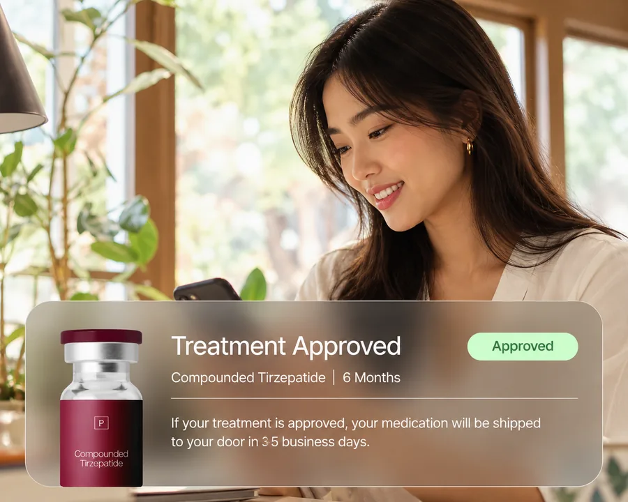
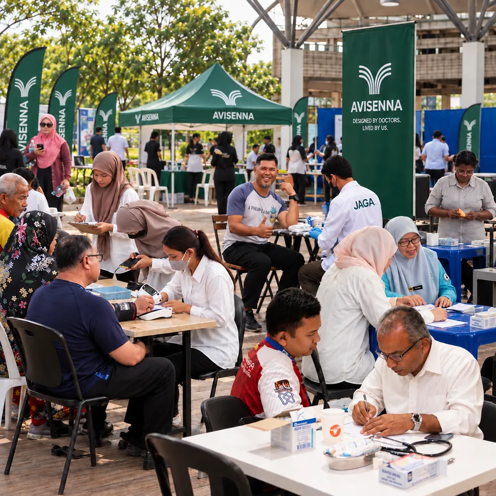
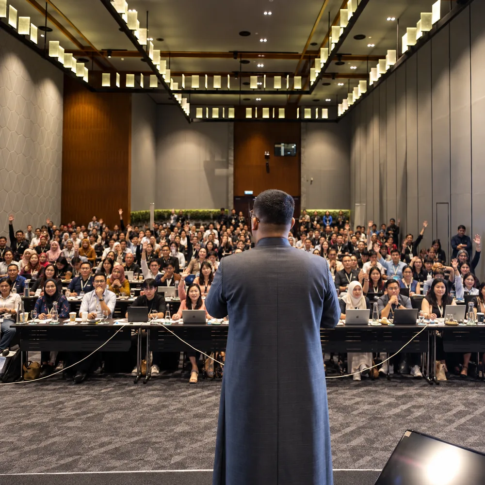
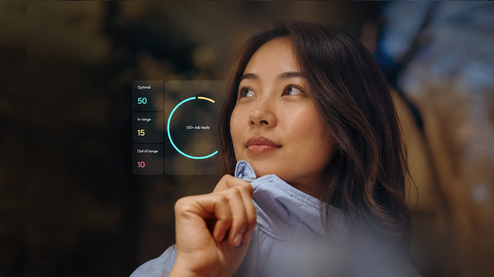

INSIGHT
Medical testing and treatments, backed by longevity research
In-depth testing across bloods, genetics, and fitness available nationwide, with access to specialist care and treatments.
Comprehensive testing, a dedicated care team, and clinically-led health plans,
all personalized to your body’s needs.
Cancel any time.
AviSenna helps you understand and monitor important health markers. It is not a diagnosis on its own. Results are always reviewed with qualified healthcare professionals.
AviSenna supports health understanding and monitoring. Results are not a medical diagnosis on their own. If you feel unwell, please see a doctor. Adults who want a clear picture of their health and to see how it changes over time. AviSenna supports understanding and monitoring. It doesn’t replace seeing a doctor when you feel unwell.
It was built to treat disease and to profit off of your symptoms. It’s not designed to help you feel your best, find the root cause, or stay ahead.
How health works today
Your annual physical tests 20 biomarkers, and calls it complete
Supplements chosen from a blog post, not your bloodwork
A doctor who sees you once a year and 20 markers at a time
Data sitting in different places, never talking to each other
Feeling dismissed, told everything looks “normal”.
Care grounded in the latest research, diagnostics and treatments, tailored to your unique health needs.
INSIGHT
In-depth testing across bloods, genetics, and fitness available nationwide, with access to specialist care and treatments.
PLANS
Your team of longevity doctors, dietitians, and physios, working together to build a plan grounded in the latest research.
Example plan only. Talk to your AviSenna Lab doctor about what's right for you.
EXPERTS
Always-on support across health, fitness, and lifestyle, with trend tracking and structured re-testing available.
ONE-STOP SOLUTION
Your results, your plan, your clinical team, and your health trends, all connected in one place for the first time.
Your results deserve more than an automated explanation.
01
Blood draw + Body composition analysis.
70+ collection centres nationwide.

02
Reviewed by licensed physicians.
Know what’s good and what needs attention.
Identify what’s out of range. Even before symptoms may arise.
* Based on the range of conditions associated with the markers tested.
From diagnostics to doctor review, body composition to longevity tracking, we’re available across Malaysia. Whatever your goal, we connect you to the right care.
Labs trusted by the medical community. Test at 70+ collection centres nationwide, at a time that fits your week.
Search our 70+ collection centres by postcode, area or state.
Over 5 million results delivered by our partner labs across Malaysia every single year.
5M+per year
70+
70+ collection centres across Malaysia
Mornings, lunch breaks or weekends. Most visits take under an hour: a quick blood draw plus body-composition assessment, then continue your day.
Honest pricing
Health answers shouldn’t be confusing, overpriced, or driven by upsells. Most companies win when you buy more. AviSenna only wins when we help you make better decisions over time.
One membership price. No upsells at the point of testing.
Renews annually. Cancel any time before renewal.
What answers can cost
Lab packages and hospital screening exclude doctor review, Longevity Consultant and baseline-to-now comparison.
One membership covers your whole year. Here’s how it compares.
AviSenna | One-off screening | |
|---|---|---|
| Health data points analysed | 200+ | ~20–40* |
| Full-body composition assessment | ||
| Doctor review, discussed with you | Report only | |
| Personal Longevity Consultant | ||
| Re-test after six months | ||
| Baseline-to-now comparison | ||
| Ongoing health record | ||
| Biological Age | ||
| Inflammation and stress markers | ||
| Enhanced hormone and thyroid testing | ||
| Enhanced metabolic and lipid testing | ||
| Nutrient testing |
* Compared with commonly available one-off screening packages in Malaysia, which typically report 20–40 results.
One plan. A full year of answers.
RM3 a day
Book my baseline visitRenews annually. Cancel any time before renewal.
“AviSenna Lab blows my mind. The experience, price, and clinician notes are all phenomenal.”
“This is the most comprehensive lab testing I have ever had. I am thrilled to know more about my health and how to improve it.”
“Best money I have spent on healthcare”
AviSenna Lab exists so our founder’s story doesn’t have to repeat itself. Built to keep you healthy for what matters most.
“At 33, I lost my uncle to cancer. By the time we caught it, it was too late. Every basic test from his doctor said he was ‘fine.’
I built AviSenna Lab because 'fine' isn't good enough.
Not for my family. Not for yours.”
Real bloodwork. Real numbers.
From the health screening to the consultations with our doctors and the moment everything finally made sense.
I joined the Avisenna Health program before, and honestly it changed my perspective on health a lot. Through the program, my GERD became so much better, and even my slipped disc pain reduced almost 80%. Until now, I do not rely too much on rehab anymore. Sometimes we think pain is normal because life is busy, but health is truly something we cannot ignore. Prevention and proper lifestyle changes really make a huge difference. Thank you for the awareness.
It is true that the Avisenna Health program helped my mother a lot. Previously, she had multiple lifestyle-related health concerns, but gradually her results improved little by little. Now she feels more energetic and active again.
Through my experience with their service before, I realised that health is something we cannot take lightly. The team was very caring and helpful throughout the process. After I started taking care of my lifestyle and monitoring my health properly, I could really see a big improvement. Thank you for reminding everyone that health is wealth.
Metabolic Momentum was very helpful for my weakness. I had several health issues and had tried treatment at good hospitals, but my weakness did not fully improve. After my aunt suggested it, I used it consistently for more than five months and felt better. My weakness reduced, my weight also improved, and I felt it supported my overall health. The product is made with natural ingredients and was effective for supporting good health.
Metabolic Momentum was very helpful for digestion. I had gastric issues for a long time, and after using it, my digestion felt much better. It helped clean my stomach and I could feel the benefit within a short time. It has no strong taste, no smell, dissolves easily in water and I did not experience side effects.
Metabolic Momentum was a good dietary supplement for me. Because of my irregular office hours, I often could not eat on time and this affected my digestion. After using it for about a month, I started noticing better digestion and improved comfort. This also helped me concentrate more at work. Overall, it felt like a useful daily support for a healthier lifestyle.
I consumed Metabolic Momentum, which included protein, probiotics, and prebiotics. It helped me manage my cravings. In two weeks, I still lost to my cravings once or twice, but it still helped. I managed to reduce weight, and even my scalp and hair felt better.
I chose Metabolic Momentum because I wanted long-lasting energy, not just a quick boost. I wanted to be healthy for the long term, not only temporarily.
I ambil private coaching dengan Ms Liza, Dr Azmi & Dr Ahmad. Everyday they reached out to me checking my condition. Alhamdulillah I happy bila boleh pakai seluar lama & of course my mood rasa so much better. Best sebab walaupun private guide kadang risau intimidating but very fun sebab diaorang bukan just monitor. they practice similar lifestyle macam kita so rasa macam kawan jadi tak stress.
Before this I selalu bloated after makan, especially malam. After follow the Metabolic Momentum routine, perut rasa lighter and bowel movement pun jadi more regular. The best part I tak rasa "terpaksa diet" sangat because the plan was simple and easy to follow. Slowly cravings also kurang and I feel more confident to continue.
Honestly my biggest issue was late-night cravings. Every night mesti nak cari something sweet or heavy. Lepas join Metabolic Momentum I start faham how to arrange my meals better. Craving masih ada sometimes but lebih senang control. Energy during work also more stable, tak cepat crash macam before.
I joined because I always rasa badan berat, cepat penat, and susah nak consistent. What I like about Metabolic Momentum is bukan extreme but more kepada reset habit slowly. After a few weeks baju rasa longgar sikit, stomach less bloated dan I jadi lebih aware what food triggers my discomfort.
At first I thought this program just about weight. But after going through it, I realised it is more about understanding my body. My digestion improved. Senang membuang & tak sembelit. I don’t feel so "full and stuck" after meals. Bila body rasa lighter, mood pun better. I would say it helped me build back momentum.
I used to skip breakfast then later makan banyak sebab terlalu lapar. In Metabolic Momentum, I learned to keep my morning routine simple but cukup. Surprisingly, I rasa kenyang longer, less snacking, and afternoon energy better. Not magic, but bila follow properly, memang nampak difference in how the body feels.
For me, the changes were not only on weight. Skin and scalp also rasa better, maybe because I drink more water and jaga makan properly. Perut kurang angin, digestion rasa smoother, and I don’t wake up feeling as heavy as before. I like that the approach is practical for daily life, not too complicated.
I pernah stop halfway before because work got too busy. But I still remember the routine helped me a lot, especially with cravings, portion control, and feeling less sluggish. The follow-up Dr Ahmad, Dr Azmi & liza made me feel supported & tak kena rasa judged. Nak rejoin sbb ada support dan rasa bertanggungjawab ada orang kejar.
I want to register my daughter and son to come for timbang and check their body also. I want them to enter the slim program because I can see the result myself. Just now I went to collect my blood result, my triglycerides dropped from 5.0 to 3.2 within this week after changing my routine. I have tried for a long time to bring it down, Alhamdulillah now finally can see progress.
Honestly I feel so relieved. Before joining Avisenna Health, my sugar reading went up sampai 6.0. After joining and following the program, it went down to 4.8. I was really shocked because I did not expect to see that kind of change. It makes me feel more confident taking care of my health.
During the program, I felt more disciplined in choosing what to eat and how to eat. The program educated me to choose more nutritious food that can help with weight loss and overall health. That time I lost around 5kg. Compared to trying to lose weight on my own, there was a big difference because there was a doctor arranging and guiding the plan.
My relative’s wife had high blood pressure and high blood sugar, and she had experienced a minor stroke. After being advised to try Metabolic Momentum, within three weeks her blood sugar reading improved, and she was able to respond and speak a little again. Alhamdulillah, it was a meaningful improvement for the family.
On day four of fasting, I checked my body composition and saw my weight reduce from 85.9 kg to 84.3 kg. My muscle mass increased from 24.5 kg to 25.5 kg, while body fat mass reduced from 41.5 kg to 38.1 kg. I was surprised to see the progress in such a short time.
My weight reduced from 61.3 kg to 59.8 kg. I thought it would be difficult to reach the 50 kg range without exercise, but it felt easier when I kept my sahur simple.
I started my gut reset journey at around 105.3 kg. Over the following weeks, my readings gradually improved, with my weight moving from around 104.7 kg to 102.2 kg. My body composition readings also showed gradual changes. It reminded me that small consistent steps can create progress.
A secure home for test results, care plans, and activity, with trends tracked against your own baseline for personal insight over time.
38yrs
Your biological age
Know how your body is doing
HbA1c
5.8%
From 6.2% at baseline
Track key biomarkers and trends
Action plans built around you
Your record keeps building. Your next screening never starts from zero.
What we offer
Each component within AviSenna is designed to work independently or together, forming a practical ecosystem that supports health, learning, and growth in everyday life.

A preventive health movement where JAGA volunteers help Malaysian families take charge of their health through early screening—starting with the people they love most.
Ask about a JAGA screening day →
Spend a day with the AviSenna doctors to have your bloodwork explained, consult directly with a doctor, get your questions answered, and discover the science behind our 90-Day Sustainable Weight Management Programme, designed to help you reset your metabolism, build sustainable habits, and take back control of your health.
A structured 90-day income pathway where ambitious Malaysians learn to build a business, lead teams and grow sustainable income alongside their careers.
Watch the F90 explainer →Clear answers to common questions about testing, pricing, and your results.
Adults who want a clear picture of their health and to see how it changes over time. AviSenna supports understanding and monitoring. It doesn’t replace seeing a doctor when you feel unwell.
One visit covers both assessments: a quick blood draw and a full-body composition assessment. Most visits take under an hour.
Yes, plan for an 8–10 hour fast before your blood draw. Water is fine. We’ll remind you of everything you need before your visit.
Results are ready within 3–5 working days, organised by health area in plain language. A doctor reviews them through the AviSenna clinical pathway and discusses them with you.
They’re your continuity between tests: keeping your plan on track, answering questions, and organising your six-month re-test. They provide guidance and coordination, not diagnosis or medical treatment.
You repeat the same assessments, a doctor reviews the new results, and every data point is compared against your baseline. So you can see your direction, not just another snapshot.
Yes. Your data is stored securely, used only for your care, and handled in line with Malaysian personal data protection requirements. See our Privacy Policy in the footer for full details.
Yes. AviSenna is a 12-month membership that renews annually. Cancel any time before your renewal date and your membership simply ends with the current term.
Still have questions?
Knowledge Hub
Practical reading designed to help you understand wellness before making decisions.
Dr. Ahmad puts cigarettes and vape in the same sentence on the podcast. Here is what is actually known, what is not, and what the law in Malaysia now says.
For some people, yes, and there are trial numbers behind it. But remission is not a cure, and the window does not stay open forever.
Almost everyone can take it. The side effects worth watching are real but uncommon, and the fear stops more people than the tablets ever do.
